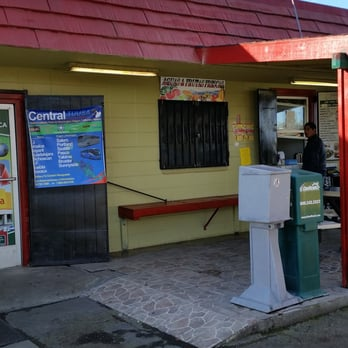

El Gallito was founded in 1997 at Porterville, California. The ancestor was a small business in Terra Bella, California. This establishment offered so many services it was hard to distinguish. However, while the owners were running that establishment they were helping manage the previous business, in Porterville, that was a gasoline station. The relationship between the current owners and the former owners allowed for the change of ownership to go smoothly, thus El Gallito was established. Combining Mexican Cuisine with a variety of services on the office side.